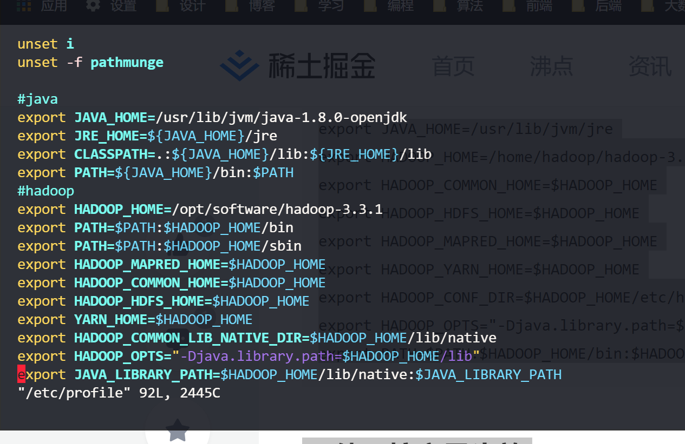

算法
线性结构
线性结构是一个有序数据元素的集合。 常用的线性结构有：线性表，栈，队列，双队列，串(一维数组)。 关于广义表、数组(高维)，是一种非线性的数据结构。 常见的非线性结构有：二维数组，多维数组，广义表，树(二叉树等)，图
特征
- 集合中必存在唯一的一个"第一个元素"；
- 集合中必存在唯一的一个"最后的元素"；
- 除最后元素之外，其它数据元素均有唯一的"后继"；
- 除第一元素之外，其它数据元素均有唯一的"前驱"。
数据结构中线性结构指的是数据元素之间存在着“一对一”的线性关系的数据结构。
如（a0,a1,a2,.....,an）,a0为第一个元素，an为最后一个元素，此集合即为一个线性结构的集合。 相对应于线性结构，非线性结构的逻辑特征是一个结点元素可能对应多个直接前驱和多个后继。
线性结构
什么是线性表？
多项式表示问题的启示：
- 同一个问题可以有不同的表示（存储）方式
- 有一类共性问题：有序线性序列的组织和管理
“线性表”：由同类型数据元素构成有序序列的线性结构
- 表中元素个数称为线性表的长度
- 线性表没有元素时，称为空表
- 表起始位置称为表头，表结束位置称表尾

线性表的链式存储实现
- 不要求逻辑上相邻的两个元素物理上也相邻；通过“链”建立起数据元素之间的逻辑关系。
- 插入、删除不需要移动数据元素，只需要修改“链”。
广义表
我们知道了一元多项式的表示，那么二元多项式又该如何表示？
- 广义表是线性表的推广
- 对于线性表而言，n个元素都是基本的单元素；
- 广义表中，这些元素不仅可以是单元素也可以是另一个广义表。
多重链表
链表中的节点可能同时隶属于多个链
- 多重链表中结点的指针域会有多个，如前面例子包含了Next和SubList两个指针域；
- 但包含两个指针域的链表并不一定是多重链表，比如在双向链表不是多重链表。
- 多重链表有广泛的用途：基本上如树、图这样相对复杂的数据结构都可以采用多重链表方式实现存储。
 这就是稀疏矩阵用十字链表解决的思路
这就是稀疏矩阵用十字链表解决的思路

大数据
linux
Hadoop1.x和Hadoop2.x区别
- Hadoop1.x组成
- MapReduce（计算+资源调度）
- HDFS（数据存储）
- Common（辅助工具）
- Hdoop2.x组成
- MapReduce（计算）
- Yarn（资源调度）
- HDFS（数据存储）
- Common（辅助工具）
在Hadoop1.X时代，Hadoop中的MapRudece同时处理业务逻辑运算和资源的调度，耦合性较大，在Hadoop2.X时代，增加了Yarn。Yarn只负责资源的调度，MapReduce只负责运算。
HDFS架构概述
- NameNode（nn）-类似目录：存储文件的元数据，如文件名，文件目录结构，文件属性（生成时间、副本数、文件权限），以及每个文件的块列表和块所在的DataNode等。
- DataNode（dn）-类似真正存储的数据：在本地文件系统存储文件块数据，以及块数据的校验和。
- Secondary NameNode（2nn）：用来监控HDFS状态的辅助后台程序，每隔一段时间获取HDFS元数据的快照。
YARN架构概述
- ResourceManager（RM）主要作用如下
- 处理客户端请求
- 监控NodeManager
- 启动或监控ApplicationMaster
- 资源的分配与调度
- NodeManager（NM）主要作用如下
- 管理单个节点上的资源
- 处理来自ResourceManager的命令
- 处理来自ApplicationMaster的命令
- ApplicationMaster（AM）作用如下
- 负责数据的切分
- 为应用程序申请资源并分配给内部的任务
- 任务的监控与容错
- Container
- Container是YARN中资源抽象，它封住了某个节点上的多维度资源，如内存、CPU、磁盘、网络等。
MapRudece架构概述
MapReduce将计算过程分为两个阶段：Map和Reduce
- Map阶段并行处理输入数据
- Reduce阶段对Map结果进行汇总
大数据技术生态系统
| 数据来源层 | 数据传输层 | 数据存储层 | 资源管理层 | 数据计算层 | 任务调度层 | 配置和调度 | 业务模型层 |
|---|---|---|---|---|---|---|---|
| 数据库（结构化数据） | Sqoop数据传递 | HDFS文件存储 | YARN资源管理 | MapReduce离线计算（1. Hive数据查询（javaEE）、2. Mahout数据挖掘（算法）） | Oozie任务调度、Azkaban任务调度 | Zookeeper（容易改变的配置信息） | 业务模型、数据库可视化、业务应用 |
| 文件日志（半结构化数据） | Flume日志收集 | HDFS文件存储/HBase非关系型数据库 | YARN资源管理 | Spark Core内存计算 （离线1. Spark Mlib数据挖掘、2.Spark R数据分析、3.Spark Sql数据查询；准实时批处理Spark Streaming实时计算）/Flink 流处理 | Oozie任务调度、Azkaban任务调度 | Zookeeper（容易改变的配置信息） | 业务模型、数据库可视化、业务应用 |
| 视频、ppt等（非结构化数据） | Kafka消息队列 | Kafka缓存一些数据 | Zookeeper（容易改变的配置信息） | 业务模型、数据库可视化、业务应用 |

推荐系统项目框架
单机模式 stonealone
- grep案例
- WordCount案例
伪分布式模式
- 所有配置都是按照分布式来的
- 但是只有一台服务器
虚拟机环境准备
vim /etc/udev/rules.d/70-persistent-net.rules //修改最后为eth0
vim /etc/sysconfig/network-scripts/ifcfg-eth0
https://juejin.cn/post/6991352348471722014#heading-18
https://juejin.cn/post/6844904114980126734#heading-1
# 设置环境变量
$ vim /etc/profile
# 进入之后在文件末尾追加如下内容：
#java
export JAVA_HOME=/usr/lib/jvm/java-1.8.0-openjdk
export JRE_HOME=${JAVA_HOME}/jre
export CLASSPATH=.:${JAVA_HOME}/lib:${JRE_HOME}/lib
export PATH=${JAVA_HOME}/bin:$PATH
#hadoop
export HADOOP_HOME=/opt/software/hadoop-3.3.1
export PATH=$PATH:$HADOOP_HOME/bin
export PATH=$PATH:$HADOOP_HOME/sbin
export HADOOP_MAPRED_HOME=$HADOOP_HOME
export HADOOP_COMMON_HOME=$HADOOP_HOME
export HADOOP_HDFS_HOME=$HADOOP_HOME
export YARN_HOME=$HADOOP_HOME
export HADOOP_COMMON_LIB_NATIVE_DIR=$HADOOP_HOME/lib/native
export HADOOP_OPTS="-Djava.library.path=$HADOOP_HOME/lib"
export JAVA_LIBRARY_PATH=$HADOOP_HOME/lib/native:$JAVA_LIBRARY_PATH
# 使环境变量生效
$ source /etc/profile
<property>
<name>hadoop.tmp.dir</name>
<value>/opt/software/hadoop-3.3.1/data/tmp</value>
</property>
配置免密登录
1.编辑/etc/hosts
(下面的 IPn 表示如 192.168.1.1 格式的云服务器外网 IP 地址。注意，如果是指向本机的 IP，请用内网 IP 地址代替)
IP1 ZKK01
IP2 slave1
IP3 slave2
2.切换到hadoop用户生成id_rsa.pub(我是root用户所以不用切换和赋权)
su hadoop
cd ~
ssh-keygen -t rsa
cd ~/.ssh/
cat id_rsa.pub >> authorized_keys
#chmod 700 /home/hadoop/.ssh
#chmod 644 /home/hadoop/.ssh/authorized_keys
---以上命令所有云服务器都要运行---
3.交换共享 id_rsa.pub 的内容
（如果搭建伪分布模式，则可以略过交换共享这一步，直接进行 ssh 的测试）--我就是伪分布式
1) master 云服务器操作
scp /home/hadoop/.ssh/authorized_keys slave2:/home/hadoop/.ssh/
(2) slave1 云服务器操作
scp /home/hadoop/.ssh/authorized_keys slave3:/home/hadoop/.ssh/
(3) slave2 云服务器操作
scp /home/hadoop/.ssh/authorized_keys master:/home/hadoop/.ssh/
- 这一步的最终目的是让所有云服务器的 authorized_keys 内容都包含各自的 id_rsa.pub 信息，且内容相同。
(4) 测试配置是否成功
master 上执行命令：
ssh slave1
quit
ssh slave2
quit
slave1 上执行命令：
ssh master
quit
ssh slave2
quit
slave2 上执行命令：
ssh master
quit
ssh slave1
quit
- 需要确保所有云服务器能够相互
ssh通过。 - 第一次进行
ssh需要密码登录。输完密码之后，选择yes保存记录。之后就不再需要输入密码登录了。 - 如果出现异常情况，可重启服务再尝试：
sudo service sshd service。
修改配置文件
1. /etc/profile 配置环境变量
vim /opt/software/hadoop-3.3.1/etc/profile

#java
export JAVA_HOME=/usr/lib/jvm/java-1.8.0-openjdk
export JRE_HOME=${JAVA_HOME}/jre
export CLASSPATH=.:${JAVA_HOME}/lib:${JRE_HOME}/lib
export PATH=${JAVA_HOME}/bin:$PATH
#hadoop
export HADOOP_HOME=/opt/software/hadoop-3.3.1
export PATH=$PATH:$HADOOP_HOME/bin
export PATH=$PATH:$HADOOP_HOME/sbin
export HADOOP_MAPRED_HOME=$HADOOP_HOME
export HADOOP_COMMON_HOME=$HADOOP_HOME
export HADOOP_HDFS_HOME=$HADOOP_HOME
export YARN_HOME=$HADOOP_HOME
export HADOOP_COMMON_LIB_NATIVE_DIR=$HADOOP_HOME/lib/native
export HADOOP_OPTS="-Djava.library.path=$HADOOP_HOME/lib"
export JAVA_LIBRARY_PATH=$HADOOP_HOME/lib/native:$JAVA_LIBRARY_PATH
2. 使环境变量生效
source /etc/profile
集群配置

也可以都配置在同一台机子上如果内存够的话..
四个默认核心文件
四个自定义文件：
#配置路径
/opt/software/hadoop-3.3.1/etc/hadoop
- 配置core-site.xml
<?xml version="1.0" encoding="UTF-8"?>
<?xml-stylesheet type="text/xsl" href="configuration.xsl"?>
<!-- Put site-specific property overrides in this file. -->
<configuration>
<!--指定HDFS中NameNode的地址-->
<property>
<name>fs.defaultFS</name>
<value>hdfs://ZKK01:8020</value>
<!-- 除了8020 还有9000等 -->
</property>
<!--指定Hadoop运行时产生文件的存储目录-->
<property>
<name>hadoop.tmp.dir</name>
<value>/opt/software/hadoop-3.3.1/data/tmp</value>
</property>
<!--配置HDFS网页登录使用的静态用户为zkk，可以不配置-->
<property>
<name>hadoop.http.staticuser.user</name>
<value>zkk</value>
</property>
</configuration>
- 配置hdfs-site.xml
<?xml version="1.0" encoding="UTF-8"?>
<?xml-stylesheet type="text/xsl" href="configuration.xsl"?>
<configuration>
<!-- nn web端访问地址 -->
<property>
<name>dfs.namenode.http-address</name>
<value>ZKK01:9870</value>
</property>
<!-- 指定HDFS副本的数量 -->
<property>
<name>dfs.replication</name>
<value>1</value>
</property>
<!-- 2nn web端访问地址 -->
<property>
<name>dfs.namenode.secondary.http-address</name>
<value>ZKK01:9870</value>
</property>
</configuration>
- 配置yarn-site.xml
<configuration>
<!-- 指定MR走shuffle-->
<property>
<name>yarn.nodemanager.aux-services</name>
<value>mapreduce_shuffle</value>
</property>
<!--指定ResourceManager地址-->
<property>
<name>yarn.resourcemanager.address</name>
<value>ZKK01</value>
</property>
<!--环境变量的继承-->
<!--3.1.3以上的版本解决了这个bug可以不配置-->
</configuration>
- 配置mapred-site.xml
<configuration>
<!--指定MapReduce程序运行在Yarn上-->
<property>
<name>mapreduce.framework.name</name>
<value>yarn</value>
</property>
</configuration>
群起集群
1. 配置Works
vim /opt/software/hadoop-3.3.1/etc/hadoop/workers
#默认为local 把local注释掉
ZKK01
2. 启动集群
- 如果集群是第一次启动，需要在ZKK01节点格式化NameNode（注意：格式化NameNode，会产生新的集群id，导致NameNode和DataNode的集群id不一致，集群找不到以往数据。如果集群在运行中报错，需要重新格式化NameNode的话，一定要先停止namenode和datanode进程，并且要删除所有机器的data和logs目录，然后再进行格式化）
[root@ZKK01 hadoop-3.3.1]# hdfs namenode -format
- 启动HDFS
[root@ZKK01 hadoop-3.3.1]# sbin/start-dfs.sh
/opt/software/hadoop-3.3.1/data/tmp/dfs/name/current

- 启动过程中遇到报错（root权限问题?）

解决办法：
-
方法一：
在Hadoop安装目录下找到sbin文件夹
在里面修改四个文件
1、对于start-dfs.sh和stop-dfs.sh文件，添加下列参数：
#!/usr/bin/env bash HDFS_DATANODE_USER=root HADOOP_SECURE_DN_USER=hdfs HDFS_NAMENODE_USER=root HDFS_SECONDARYNAMENODE_USER=root2、对于start-yarn.sh和stop-yarn.sh文件，添加下列参数：
#!/usr/bin/env bash YARN_RESOURCEMANAGER_USER=root HADOOP_SECURE_DN_USER=yarn YARN_NODEMANAGER_USER=root重新开始start…就可以。
-
方法二（推荐采用）

-
cd /etc/hadoop/ vim hadoop-env.sh -
export HDFS_NAMENODE_USER=root export HDFS_DATANODE_USER=root export HDFS_SECONDARYNAMENODE_USER=root export YARN_RESOURCEMANAGER_USER=root export YARN_NODEMANAGER_USER=root -
Now save and start yarn, hdfs service and check that it works.
我们在hadoop-env.sh文件中也可以找到如下的描述
To prevent accidents, shell commands be (superficially) locked to only allow certain users to execute certain subcommands.
为了防止发生意外，仅（部分）锁定shell命令以仅允许某些用户执行某些子命令。
It uses the format of (command)_(subcommand)_USER.For example, to limit who can execute the namenode command,export HDFS_NAMENODE_USER=hdfs
使用“命令_子命令_用户”，例如，通过使用export HDFS_NAMENODE_USER=hdfs来限制哪个用户可以执行namenode命令。参考stackoverflow上的相关讨论
-
-
Web访问NameNode Web地址
-
IP：9870（配置hdfs-site.xml时候设置的）
-
查看HDFS上存储的数据信息
-
我是用云服务器的 所以记得在云服务器防火墙管理中添加可访问端口（其他端口同理）

-
-
在配置了ResourceManager的节点（ZKK01）启动YARN
-
[root@ZKK01 hadoop-3.3.1]# sbin/start-yarn.sh -

- Web端查看YARN的ResourceManager
- IP：8088
- 查看YARN上运行的Job信息
集群基本测试
1.上传文件到集群
上传小文件
hadoop fs -mkdir /wcinput
hadoop fs -put wcinput/wc.input /wcinput

网页中操作，要在本地机配置hosts文件
2.查看HDFS在磁盘存储文件内容
- 查看：页面只是一个链接，真实的东西都存在data节点上。
cd data/tmp/dfs/data/current/BP-912934988-110.42.160.28-1641041699096/current/finalized/subdir0/subdir0/
cat blk_1073741825
zhangkeke hadoop zhangsan lisi wangwu
liuliu wangmengting xingguo
zhangkeke
keke keke keke keke keke hadoop
hive hivehive
-
拼接：默认块大小128MB如上传一个jdk tar包，其实也是放在节点上 可通过拼接命令查看

3.下载
hadoop fs -get /XXX ./
4.执行wordcount程序
hadoop jar share/hadoop/mapreduce/hadoop-mapreduce-examples-3.3.1.jar wordcount /wcinput /wcoutput
配置历史服务器
3.2以上的版本没配置也能跳转
<!--历史服务器端地址-->
<property>
<name>mapreduce.jobhistory.address</name>
<value>master:10020</value>
</property>
<!--历史服务器web端地址-->
<property>
<name>mapreduce.jobhistory.webapp.address</name>
<value>master:19888</value>
</property>
需要手动启动历史服务器
mapred --daemon start historyserver
开启日志聚集功能！
伪分布式就不用了

hadoop集群的群起脚本
https://www.codetd.com/article/1452178
第一章 HDFS概述
1.1HDFS产出背景及定义
-
HDFS产出背景
随着数据量越来越大，在一个操作系统存不下所有的数据，那么就分配到更多的操作系统管理的磁盘中，但是不方便管理和维护，迫切需要一种系统来管理多台机器上的文件，这就是分布式文件管理系统。HDFS 只是分布式文件管理系统中的一种。
-
HDFS定义
HDFS（Hadoop Distributed File System），它是一个文件系统，用于存储文件，通过目录树来定位文件；其次，它是分布式的，由很多服务器联合起来实现其功能，集群中的服务器有各自的角色。
HDFS 的使用场景：适合一次写入，多次读出的场景。一个文件经过创建、写入和关闭之后就不需要改变。
1.2 HDFS优缺点
优点：
- 高容错性
- 数据自动保存多个副本。它通过增加副本的形式，提高容错性。
- 某一个副本丢失以后，它可以自动恢复。
- 适合处理大数据
- 数据规模：能够处理数据规模达到GB、TB、甚至PB级别的数据。
- 文件规模：能够处理百万规模以上的文件数量，数量相当之大。
- 可构建在廉价机器上，通过多副本机制，提高可靠性
缺点：
-
低时间延迟的访问
- 要求低时间延迟的数据访问的应用，不适合在HDFS上运行，比如毫秒级的存储数据。HDFS是提高数据吞吐量的应用优化的，但可能会以提高时间延迟为代价。
-
无法高效的对大量小文件进行存储：
- 存储大量小文件(这里的小文件是指小于HDFS系统的Block大小的文件（默认64M）)的话，它会占用 NameNode大量的内存来存储文件、目录和块信息。这样是不可取的，因为NameNode的内存总是有限的。
- 由于namenode将文件系统的元数据存储在内存中，因此文件系统所能存储的文件数量受限制于namenode的内存容量。
- 小文件存储的寻道时间会超过读取时间，它违反了HDFS的设计目标。
NN负责文件元数据(属性，块的映射)的管理，NN在运行时，必须将当前集群中存储所有文件的元数据全部加载到内存！NN耗费大量内存！ 而不能存储可观的数据。 举例： 当前运行NN的机器，有64G内存，除去系统开销，分配给NN50G内存！ 文件a (1k), 存储到HDFS上，需要将a文件的元数据保存到NN，加载到内存 包括：文件名 创建时间 所属主 所属组 权限 修改时间+ 块的映射(1块) NN占用内存：150B 最多存储50G/150B个文件a 存储占用磁盘空间：50G/150B * 1k 文件b (128M), 存储到HDFS上，需要将b文件的元数据保存到NN，加载到内存 包括：文件名 创建时间 所属主 所属组 权限 修改时间+块的映射(1块) NN占用内存：150B 最多存储50G/150B个文件b 存储占用磁盘空间：50G/150B * 128M -
并发写入，文件随机修改：
- 一个文件只能有一个写，不允许多个线程同时写。
- 仅支持数据 append（追加），不支持文件的随机修改。
1.3HDFS组成架构
-
NameNode（nn）：就是Master，它是一个主管、管理者- 管理HDFS的名称空间；
- 配置副本策略；
- 管理数据块（Block）映射信息；
- 处理客户端读写请求。
-
DataNode（dn）：就是Slave(3.x之后叫worker)。NameNode下达命令，DataNode执行实际的操作- 存储实际的数据块；
- 执行数据块的读/写操作。

-
Client：就是客服端
- 文件切分：文件上传HDFS的时候，Client将文件切分成一个一个的Block，然后进行上传；
- 与NameNode交互，获取文件的位置信息；（允不允许读）
- 与DataNode交互，读取或者写入数据；
- Client提供一些命令来管理HDFS，比如NameNode格式化；
- Client可以通过一些命令来访问HDFS，比如对HDFS增删改查操作。
-
Secondary NameNode：并非NameNode的热备。当NameNode挂掉的时候，它并不能马上替换NameNode并提供服务。
- 辅助NameNode，分担其工作。
- 但是我们以后都会用2个NameNode来代替，因为NameNode有高可用的特性。
1.用公司电脑ssh服务器，突然连接不上了（之前可以）

ssh -v root@110.42.160.28 ,报错信息如下
C:\02_projects\myGit\learning>ssh -v root@110.42.160.28
OpenSSH_for_Windows_8.1p1, LibreSSL 3.0.2
debug1: Connecting to 110.42.160.28 [110.42.160.28] port 22.
debug1: connect to address 110.42.160.28 port 22: Connection refused
ssh: connect to host 110.42.160.28 port 22: Connection refused
用VNC登录，显示Failed to start OpenSSH server deamon
接着输入sshd -t 检查：显示Missing privilege separation directory: /var/empty/sshd
解决办法：创建一个目录/var/empty/sshd
mkdir /var/empty
mkdir /var/empty/sshd
sshd -t
#重启sshd
systemctl restart sshd
后能成功登录
2. 伪分布式群起失败。

解决方法:
可以把/home/hadoop/.ssh/known_hosts文件删了，然后重新生成配对密钥即可
sudo apt-get openssh-server
ssh-keygen -t rsa -P ""
cat $HOME/.ssh/id_rsa.pub >> $HOME/.ssh/authorized_keys
3. 解决云服务器重启后，hostname还原的问题
查看主机名：hostname
修改主机名：
方法1：sudo hostname xxx
但是这是临时的，重启后失效
方法2 ：修改hostname文件，永久修改
sudo vi /etc/hostname
重启系统后才会生效
但是，在云服务器上，用方法2设置后，重启后还是会将hostname还原为之前的
需要在在 /etc/cloud/cloud.cfg中将cloud_init_modules中的下面两行删除
-set_hostname
- [update_hostname,once-per-instance]
linux centos yum报错 To address this issue please refer to the below wiki article 解决方法

报错原因：国外yum镜像源 国内下载不了 修改为国内阿里yum镜像源
解决方法：
cd /etc/yum.repos.d/
mkdir repo_bak
mv *.repo repo_bak/
wget http://mirrors.aliyun.com/repo/Centos-7.repo
yum clean all
yum makecache
详细参考：《centos7 配置国内yum源和epel源》https://blog.csdn.net/whatday/article/details/106107168
解析不不了配置文件中的$releasever

vim Centos-7.repo
vim CentOS-Base.repo
#用vim的查找替换命令 将$releasever都替换为7（因为我的是centos7）
%s/\$releasever/7/g
4.Vim 字符串替换
查找和替换是任意一款文本编辑器的一组常见和必备功能。下面就来讲解 Vim 中的字符串替换功能。
Vim 使用以下命令结构实现替换功能。
:<range> s/<search_string>/<replace_string>/<modifier>
- range - 定义执行“查找和替换”函数的范围，有两个不同的值
- ％ - 对整个文件执行
- < start _line > < end_line > - 在一组特定的行上面执行操作
- search_string - 需要替换的字符串
- replace_string - 替换旧字符串的新字符串
- modifier - 确定替换行为，有几个不同的值
- g - 全局替换
- gc - 在每次更换之前要求确认
- gn - 忽略替换功能并突出显示查找结果。
5.NameNode无法启动，报错原因：
1、 java.net.BindException: Port in use: master:9001
2、Caused by: java.net.BindException: Cannot assign requested address

端口被占用是直接原因，但起因是不能分配所需的地址，跟地址有关的就联想到 /etc/hosts文件
云服务器的IP要换成内网的IP，内网可以比作一个局域网。
6.hadoop集群部署上后，在服务器中运行hadoop自带的jar包中的实例报错

解决方法：按错误提示，在mapred-site.xml配置文件中添加hadoop根目录
1.先运行hadoop classpath得到classpath
将得到的classpath全部复制到mapred-site.xml中，配置
<property>
<name>mapreduce.application.classpath</name> <value>/home/hadoop/app/hadoop/etc/hadoop:/home/hadoop/app/hadoop/share/hadoop/common/lib/*:/home/hadoop/app/hadoop/share/hadoop/common/*:/home/hadoop/app/hadoop/share/hadoop/hdfs:/home/hadoop/app/hadoop/share/hadoop/hdfs/lib/*:/home/hadoop/app/hadoop/share/hadoop/hdfs/*:/home/hadoop/app/hadoop/share/hadoop/mapreduce/*:/home/hadoop/app/hadoop/share/hadoop/yarn:/home/hadoop/app/hadoop/share/hadoop/yarn/lib/*:/home/hadoop/app/hadoop/share/hadoop/yarn/*
</value>
</property>
配置结束关闭mapred-site.xml
重新启动集群，再在share文件中运行
7. WARNING: REMOTE HOST IDENTIFICATION HAS CHANGED!
报错如下
@@@@@@@@@@@@@@@@@@@@@@@@@@@@@@@@@@@@@@@@@@@@@@@@@@@@@@@@@@@
ZKK01: @ WARNING: REMOTE HOST IDENTIFICATION HAS CHANGED! @
ZKK01: @@@@@@@@@@@@@@@@@@@@@@@@@@@@@@@@@@@@@@@@@@@@@@@@@@@@@@@@@@@
ZKK01: IT IS POSSIBLE THAT SOMEONE IS DOING SOMETHING NASTY!
ZKK01: Someone could be eavesdropping on you right now (man-in-the-middle attack)!
ZKK01: It is also possible that a host key has just been changed.
ZKK01: The fingerprint for the ECDSA key sent by the remote host is
...
原因：
因为服务器的ip发生变更了 第一次SSH连接时，会生成一个认证，储存在客户端（也就是用SSH连线其他电脑的那个，自己操作的那个）中的known_hosts，但是如果服务器验证过了，认证资讯当然也会更改，服务器端与客户端不同时，就会跳出错误啦。
解决办法：
输入命令：ssh-keygen -R +输入服务器的IP
8.Permission denied (publickey,gssapi-keyex,gssapi-with-mic,password)问题解决
经过排查发现是没有设置免密登录，解决方案如下：
ssh-keygen -t rsa
cat ~/.ssh/id_rsa.pub >> ~/.ssh/authorized_keys
chmod 0600 ~/.ssh/authorized_keys
常用端口号及配置文件
-
hadoop3.x
- HDFS NameNode 内部常用端口：8020/9000/9820
- HDFS NameNode 对用户的查询端口：9870
- Yarn查看任务运行情况的：8088
- 历史服务器：19888
-
hadoop2.x
- HDFS NameNode 内部常用端口：8020/9000
- HDFS NameNode 对用户的查询端口：50070
- Yarn查看任务运行情况的：8088
- 历史服务器：19888
-
常用配置文件
- 3.x
- core-site.xml
- hdfs-site.xml
- yarn-site.xml
- mapred-site.xml
- wokers
- 2.x
- core-site.xml
- hdfs-site.xml
- yarn-site.xml
- mapred-site.xml
- slaves
- 3.x